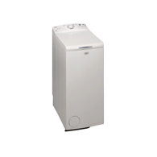

Whirlpool AWE7730 vaskemaskin Toppmatet
5,5 Kg, 1200 o/min, A+, Hurtigvask, 6 TH SENSE

SPARER RESSURSER
6 TH SENSE tekonologien føler
mengde tøy, og tilpasser
automatisk ressursbruken
deretter, noe som medfører at du kan spare
opp til 30% ** strøm, tid og vann.
DESIGN OG ERGONOMI MED
ET STREIF AV FORSKJELL
Whirlpools toppmatede vaskemaskiner
kombinerer eleganse og funksjonalitet i et
design, som vil passe i ethvert hjem. 40 cm
bredde og med en kapasitet på opp til 6 kg ; en
toppmatet vaskemaskin som er den perfekte
løsning til et mindre lokale som f.eks. en
hybel eller et lite bad. Med en stor toppbetjent
trommelåpning er det enkelt å legge i og ta ut
av maskinen, uten at du behøver å bøye deg
eller sitte på huk.